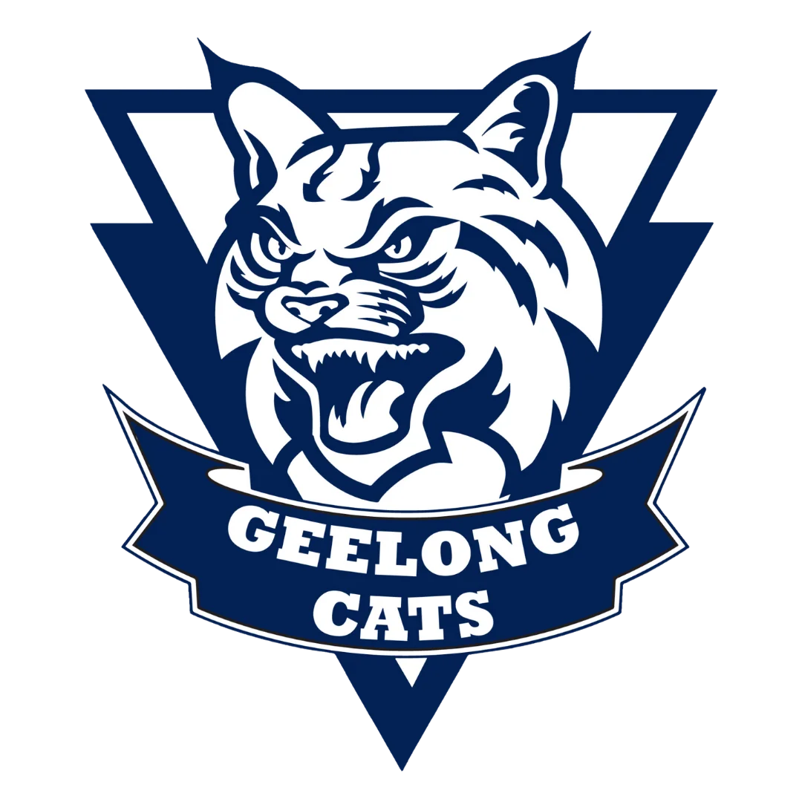
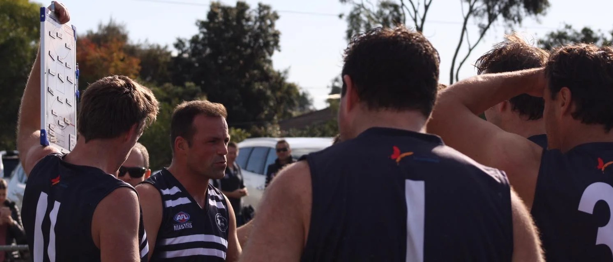

FINALS DESERVE
TO LOOK LIKE FINALS.
A special Click Sports Media Finals Media Day for the two Geelong AFL Masters teams still in the hunt.
- Player headshots
- Team photography
- Finals team lineups
- Website features
- Social-ready content
This isn't just headshots.
We're building a professional set of Finals assets that Geelong AFL Masters can use across the website, team lineups, social media, Finals coverage and future club content.
One photo. Six ways to use it.
Headshot
Headshot
Lineup
Lineup
Profile
Profile
Social Graphic
Graphic
Club Content
Club Content
Concept sequence only — every node is illustrative. Media Day headshots will be shot fresh, individually, for every player.
Professional player
headshots.
Every available player from both Finals teams, photographed in a single consistent style.
- Primary lineup / headshot pose
- Additional portrait poses where time permits
- Coaches and key team staff, where available

Example coaching-staff portrait style, from the club's existing photography — every Media Day headshot is prepared for digital club use.
placeholder
placeholder
placeholder
placeholder
Example lineup layout only — headshots and player names shown here are placeholders, not real players. No player purchase is required for their headshot to appear here.
Finals team
lineups.
Player headshots prepared so they drop straight into the club's existing team lineup system — a full lineup populated with professional photography instead of placeholders.
Two professional
team photos.
One complete team photograph for each Finals side — the kind of shot that outlives the season.
- Club history
- Website
- Finals coverage
- Social media
- Presentation material
- Future club promotion
Photography sample pending — each Finals team gets its own dedicated team shot on the day.
Concept mock, not a live screenshot — illustrates the kind of dedicated Finals page this Media Day makes possible.
Dedicated website
space.
Each Finals team can receive its own presentation on the site:
- Team hero / photo
- Finals lineup
- Player imagery
- Finals information
- Club / sponsor content
A special price for
an existing partner.
Geelong AFL Masters is an existing long-term client, and this will be the first dedicated Click Sports Media Media Day. We're offering a pilot price that's intentionally below where equivalent Media Day work will normally be positioned.
- Professional headshots
- Two team photographs
- Headshots prepared for team lineups
- Website-ready imagery
- Dedicated Finals website presentation
- Club social / web usage
- Coaches / team staff at the session
- Final edited image preparation
This is a special introductory partner rate reflecting the existing relationship and this shoot's role as a pilot for a full club Media Day next season — it is not Click Sports Media's standard Media Day rate.
Player purchases.
Players do not need to purchase anything for their headshot to appear in the club's lineup or website. These are simply optional personal copies for players who'd like one.
Headshot
One professionally edited, high-resolution individual portrait.
Player Gallery
All final edited individual portraits of that player.
Finals Player Pack
- All final individual player portraits
- Digital copy of the Finals team photograph
- Social-ready version of the player's feature image
Digital team photo — $15
Printed team-photo options may also be made available once final print sizes and fulfilment are confirmed.
What about the O55s & Seniors?
Extend the Finals shoot
If timing and player availability suit, we can cover one or both additional teams with the same core headshot and team-photo treatment.
Start next season with everyone
Use the Finals shoot as the pilot. Then organise a complete Geelong AFL Masters Media Day at the start of next season, so every team and player is photographed consistently.
- Team lineups
- Website profiles
- Match Day graphics
- Fixtures
- Results
- Milestones
- Birthdays
- Sponsor posts
- Finals campaigns
- Presentation night
- Trading cards
- Player keepsakes
Imagine this
across the whole club.
This Finals shoot is the proof of concept for a full Geelong AFL Masters Media Day at the start of next season.
Simple, on the day.
Set Up
Click Sports Media establishes a consistent lighting and background setup at the agreed club location.
Players Rotate Through
Players are photographed efficiently, with several poses each.
Team Photo
Each Finals team is photographed together.
Edit & Prepare
Images are edited and prepared for team lineup, web and social use.
Finals Content Goes Live
Club assets are deployed for use across the Finals campaign.
LET'S MAKE THE FINALS
LOOK THE PART.
Two Finals teams. Professional player imagery. Team photos. Better club content.